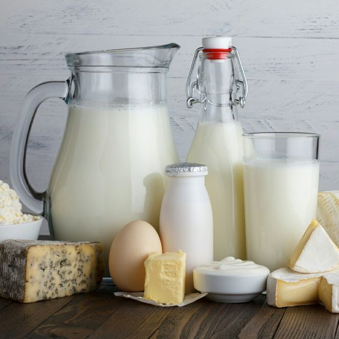
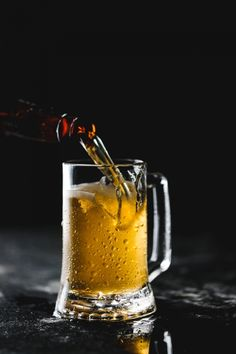
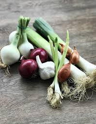

<ion-content>
<ion-card>
  <ion-card-header>
    <ion-card-title>Alimentos malos para mascotas</ion-card-title>
  </ion-card-header>
  <ion-card-content>
    <ion-list>
      <ion-item>
        <ion-thumbnail slot="start">
          
        </ion-thumbnail>
        <ion-label>Chocolate: Contiene teobromina, tóxica para perros y gatos, causando vómitos, diarrea, y en casos graves, convulsiones o la muerte</ion-label>
      </ion-item>

      <ion-item>
        <ion-thumbnail slot="start">
          
        </ion-thumbnail>
        <ion-label>Leche y productos lácteos: La mayoría de las mascotas son intolerantes a la lactosa, lo que les genera diarrea y malestar digestivo.</ion-label>
      </ion-item>

      <ion-item>
        <ion-thumbnail slot="start">
          
        </ion-thumbnail>
        <ion-label>Leche y productos lácteos: La mayoría de las mascotas son intolerantes a la lactosa, lo que les genera diarrea y malestar digestivo.</ion-label>
      </ion-item>

      <ion-item lines="none">
        <ion-thumbnail slot="start">
          
        </ion-thumbnail>
        <ion-label>Cebolla, ajo y cebolleta: Estos vegetales dañan los glóbulos rojos, provocando anemia</ion-label>
      </ion-item>
    </ion-list>
  </ion-card-content>
</ion-card>
</ion-content>